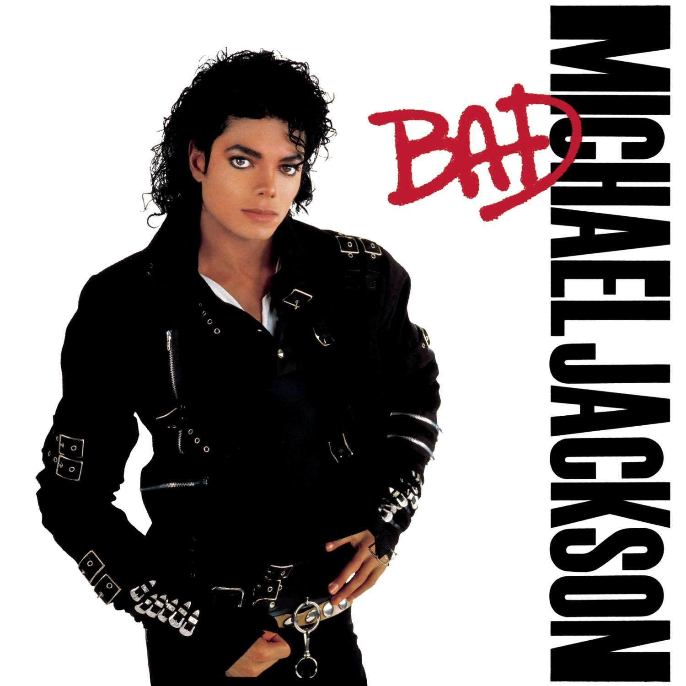
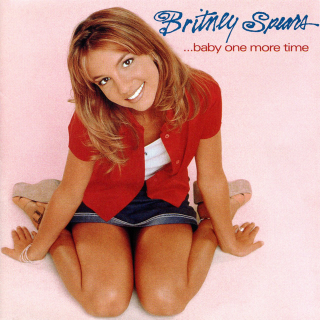
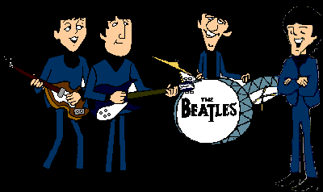
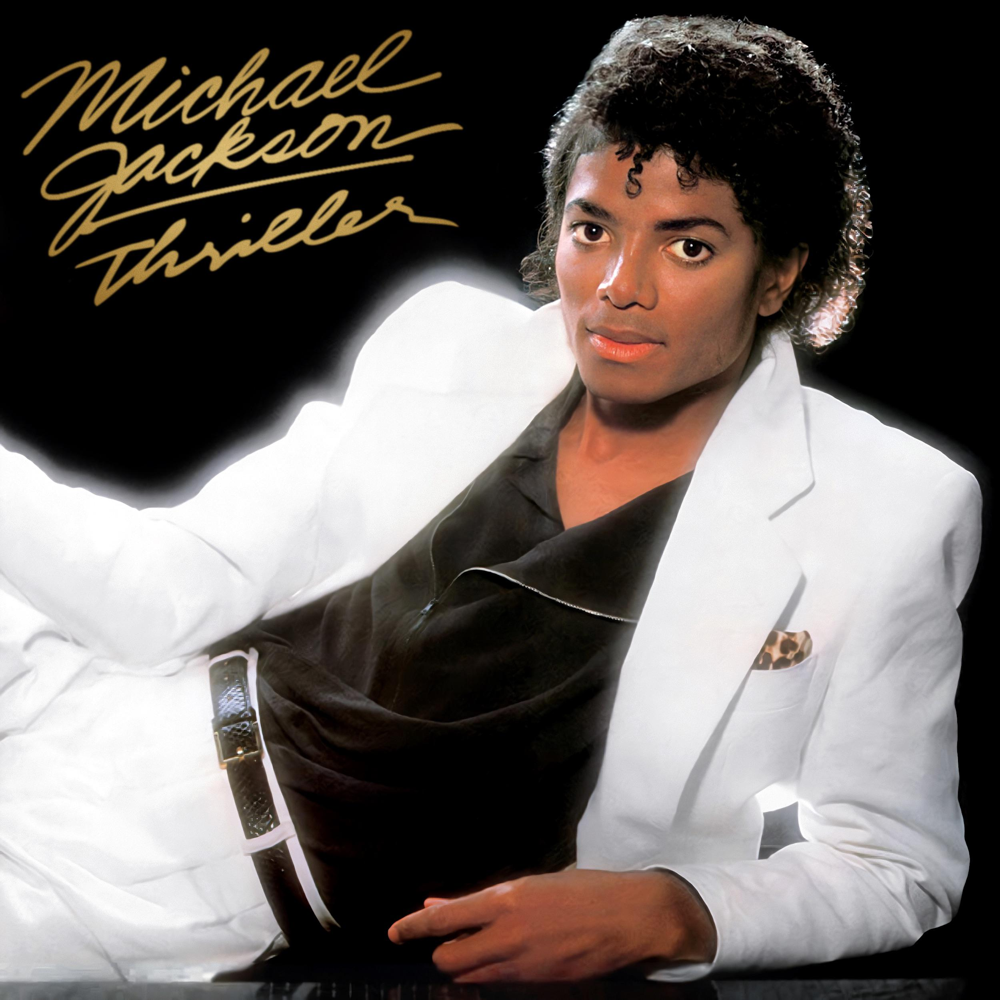
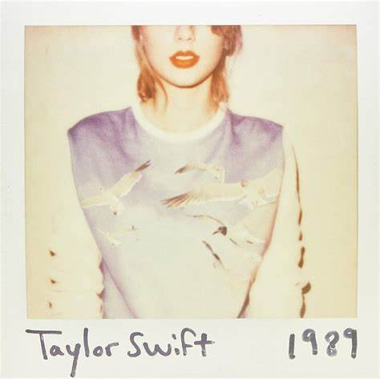

.jpg)



Bienvenido a nuestra página de música. Aquí encontrarás las últimas novedades, tus artistas favoritos y mucho más. ¡Disfruta explorando!


Thriller es el sexto álbum de estudio del cantante estadounidense Michael Jackson, publicado el 29 de
noviembre de 1982 por Epic Records.
Debido al éxito arrollador del álbum, se lanzaron siete singles para promocionarlo. Todos
entraron en el Top Ten de Billboard. Thriller arrasó en los Grammy y American Music con ocho premios
en cada gala, por consiguiente
21 es el segundo álbum de estudio de la cantautora británica Adele. Fue lanzado al mercado el 24 de
enero de 2011 en Europa y el 22 de febrero siguiente en Estados Unidos a través de los sellos
discográficos XL y Columbia.
21 es una joya indispensable de escuchar, y sin duda, una producción que sitúa a Adele como un
icono de la nueva ola del soul.

1989 es el quinto álbum de estudio de Taylor Swift, lanzado el 27 de octubre de 2014 a través de Big
Machine Records. El título del álbum lleva el nombre del año de nacimiento de ella y su música está
inspirada en la música pop de los años ochenta.
fue clasificado como uno de los mejores álbumes de 2014 por varias publicaciones, entre ellas
Billboard, Time y Rolling Stone.